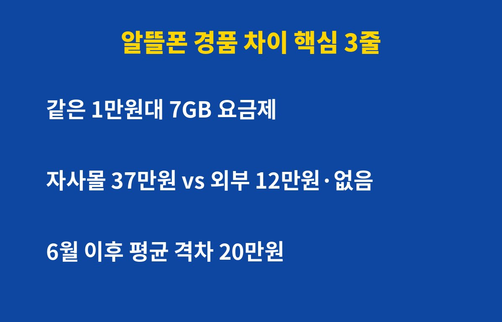
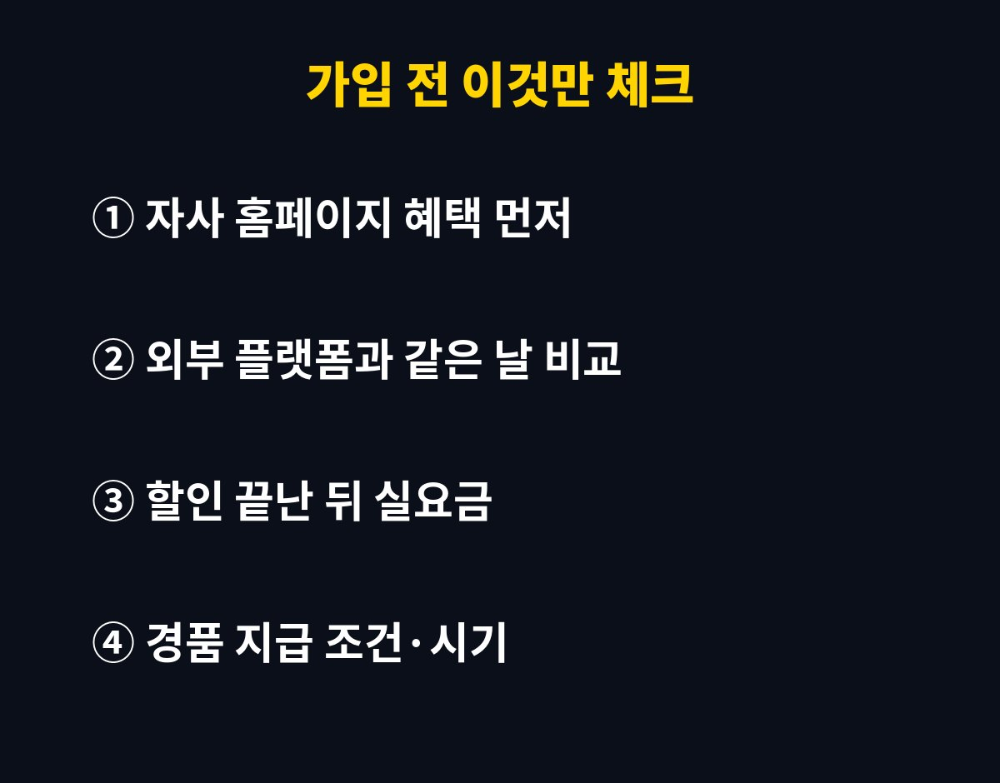

알뜰폰 경품이 같은 요금제, 같은 날인데도 가입하는 곳에 따라 최대 약 37만원까지 차이 났다는 자료가 나왔어요. 월 1만원대 LTE 7GB 요금제 하나 가입하는데 말이죠.
알뜰폰으로 갈아탈 생각이라면, 요금표보다 "어디서 가입하느냐"가 더 중요할 수 있다는 얘기예요. 나만 덜 받는 함정, 어떻게 피할까요?
10월 21일 뉴데일리 보도에 따르면, 이동통신 3사 계열 알뜰폰 업체 한 곳이 같은 날 자사 홈페이지 가입자에게는 37만원 상당 경품을 줬어요. 그런데 외부 판매 플랫폼에서 같은 요금제에 가입하면 12만원 상당 경품이거나, 아예 별도 혜택이 없었다고 해요.
한두 번 있던 일도 아니래요. 올해 6월 이후 같은 시점, 같은 요금제 기준으로 온라인 판매처별 경품 차이가 평균 20만원이었다는 게 방송미디어통신위원회 시장 모니터링 자료 내용이에요. 이 자료는 국회 과방위 조경태 의원실을 통해 공개됐고요.
참고로 10월 6일 국정감사에서는 월 1만원대 요금제 가입자에게 최대 54만원 이상 경품을 준 사례도 언급됐어요. 요금은 1만원대인데 경품이 수십만원. 숫자만 보면 좀 어지럽죠?

알뜰폰은 자사 홈페이지, 외부 판매 플랫폼 등 여러 온라인 창구에서 팔려요. 업체 입장에선 창구마다 수수료나 마케팅 전략이 다르니 혜택을 다르게 거는 거죠.
문제는 소비자가 이걸 다 비교하기 어렵다는 점이에요. 특히 온라인 검색이 익숙하지 않은 부모님 세대는 처음 본 곳에서 그냥 가입하기 쉬운데, 그게 하필 경품이 제일 적은 창구일 수 있거든요. 그래서 "이용자 차별 아니냐"는 지적이 나온 거예요.
현행 전기통신사업법은 부당한 이용자 차별을 금지하고 있어요. 다만 판매처별 경품 차이가 실제 위반인지는 당국 검토가 더 필요하다는 게 보도 내용이에요. 결론이 나기 전까지는 결국 내가 챙기는 수밖에 없죠.
| 단계 | 할 일 | 이유 |
|---|---|---|
| 1 | 원하는 요금제 업체의 자사 홈페이지 혜택 확인 | 이번 사례처럼 자사몰 경품이 클 수 있음 |
| 2 | 외부 판매 플랫폼 2~3곳과 같은 날 비교 | 경품은 날짜·창구마다 바뀜 |
| 3 | 할인 기간이 끝난 뒤 실제 월 요금 확인 | 경품보다 2년 총비용이 더 중요 |
| 4 | 경품 지급 조건·시기·유지 기간 캡처 | 조건 못 채우면 못 받을 수 있음 |
꿀팁 하나. 경품만 보고 고르면 오히려 손해일 수 있어요. 첫 몇 달만 싸고 이후 요금이 확 오르는 요금제도 있거든요. 경품 + 2년 동안 낼 총 요금을 같이 계산하는 게 정답이에요.

이번 지적의 핵심은 "정보에 약한 사람이 덜 받는다"는 거예요. 부모님 알뜰폰을 대신 알아봐 드린다면, 가입 버튼 누르기 전에 창구 두 곳만 더 비교해 보세요. 5분 비교로 경품 차이가 수십만원일 수 있으니, 시급으로 치면 이만한 알바가 없죠.
앞으로 당국 점검이나 법 개정 논의가 어떻게 흘러가는지에 따라 알뜰폰 경품 구조가 바뀔 수도 있어요. 바뀌면 바로 다시 정리해 드릴게요.
여러분은 알뜰폰 가입할 때 몇 군데나 비교해 보셨나요?
통신비 아끼는 소식, 놓치기 싫다면 구독해 두세요. 꼭 알아야 할 것만 빠르게 알려 드릴게요.
기사·공식 발표 기준이며 출시·가격 정보는 바뀔 수 있어요.